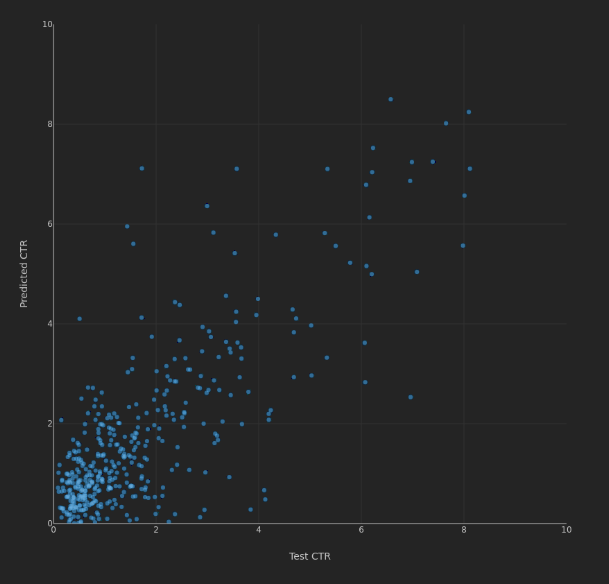
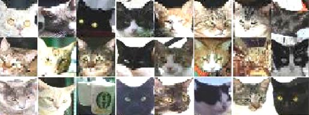
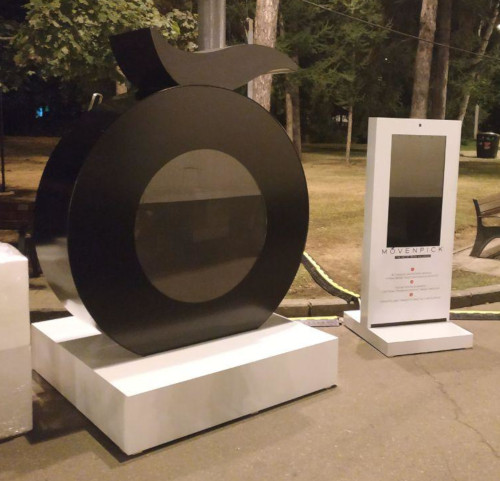
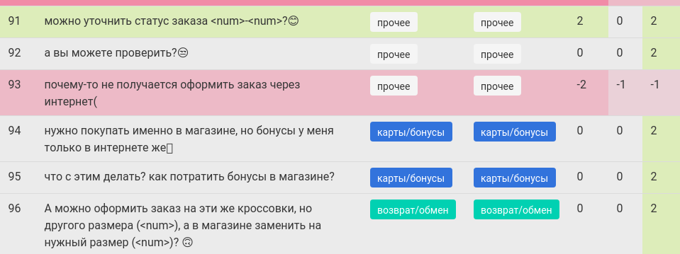
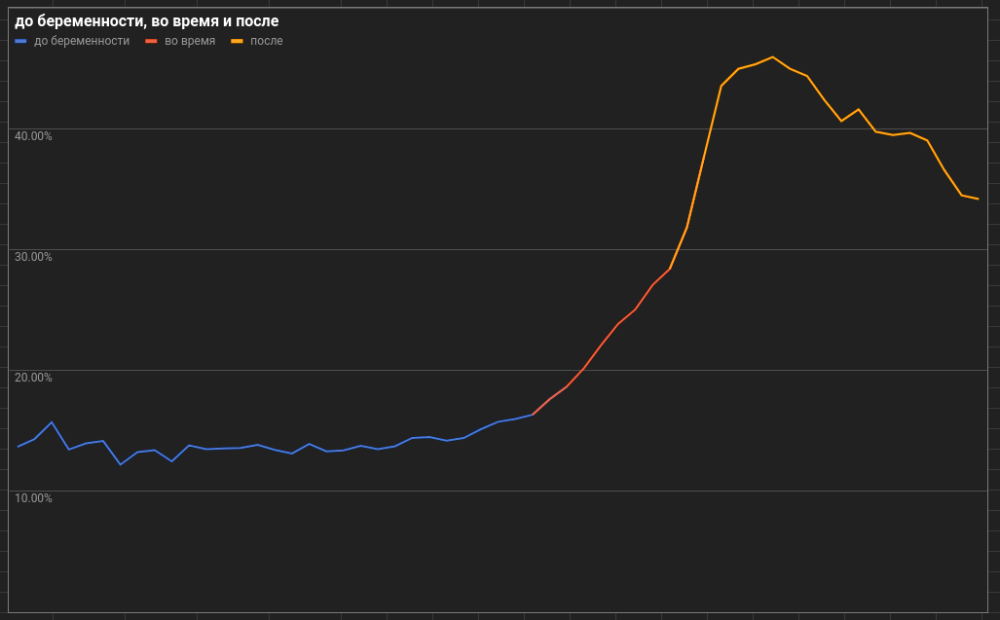
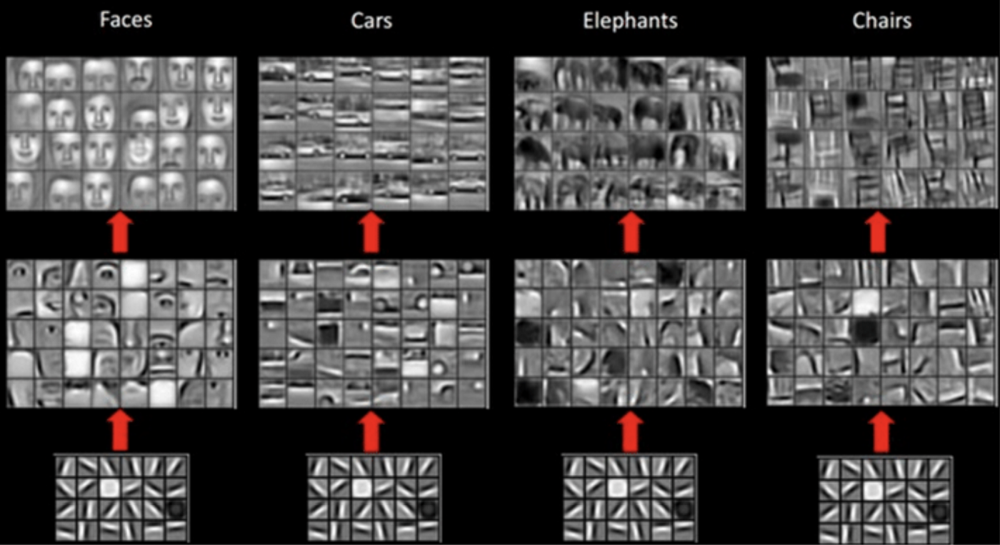

Машинное обучение
План
- Посмотрим на ML с птичьего полета
- Вспомним линейные уравнения и матрицы
- Посмотрим как устроен нейрон
- В общих чертах разберемся с обучением сетей
- Попробуем все это на питоне
ИИ - отнюдь не "электронный сатана", а всего лишь устройство, которое ищет статистические корреляции. Решая глобальную задачу оптимизации, он может найти такие решения, конечный результат которых большинству из нас не понравится. И мы просто не заметим это вовремя из-за общей сложности системы.Станислав Лем, 1967, "Сумма технологии"
К середине 20'х AI в целом превзойдет возможности человеческого мозга.Шейн Легг, 2008
Основатель DeepMind
В ближайшие 10 лет AI превзойдет человека в основных спобностях - зрении, слухе, естественном языке, способностям к мышлению.Марк Цукенберг, 2015
Я продолжаю бить тревогу, но пока люди не видят роботов, убивающих других людей на улицах, они не знают, как реагировать, поскольку им такой сценарий кажется нереалистичным.Илон Маск, 2017
Железяка сама начинает так ходить? Нам говорят, что книги у нее нет, что она в такую бесову силу играет, несколько часов поучившись, в состоянии повторять то, что люди годами искали в новоиндийской защите.Петр Свидлер, 2017
гроссмейстер, об AlphaZero
Они потратили четыре часа на шахматы, потом за два часа они разбомбили сёги. Соответственно, ясно, что теперь они будут решать совершенно другие задачи. Для них шахматы — просто мелочь какая-то.Сергей Шипов, 2017
гроссмейстер, об AlphaZero
Я вообще ничего не мог поделать, мои мысли будто читали.Джин Ли, 2016
военный пилот, о воздушном бое с ИИ
Новости
Кейсы
у нас было
Свыше десятка проектов с машинным зрением и дополненой реальностью
Прогнозирование CTR креативов
Прогнозирование беременности
Распознвание пород кошек
Трекинг лиц, faceid, распознавание эмоций
NLP - классификация коментариев, определение эмоциональной окраски текстов
Попытки генерировать музыку
Прогнозирование CTR
Есть креатив и метрики его размещения
Необходимо спрогнозировать его успешность
Расознавание речи, KWS
Сбор датасета
Рекуррентные нейронные GRU/LSTM
Мобильное приложение
Котики
1M аккаунтов / 60М фотографий
Оценочный кост обработки на googlevision $60К
Собственная классификация на AWS заняла неделю
Стоила $350
Эмоции человека
Живая инсталляция в парке
Трекер лиц - dlib
Классификация эмоций - svm
NLP
Классификация комментариев в сообществе
Кластеризация
Прогнозирование беременности
Рабочая гипотеза - по поведению в соцеальных сетях можно предсказать беременность и старгетироваться
Машинное зрение
youtube архивML
machine learning
Суть ML
Соседние области

Соседние области
- Нейронные сети
- Распознавание образов
- Искусственный интеллект
- Дата майнинг
В ML две основные темы
Данные
Алгоритмы
Данные
- Данных всегда мало
- Данные всегда зашумлены, неоднородны и слабо-релевантны задаче
- Сбор и обработка данных занимает 80% времени
- Следствие - датасеты очень дорого стоят
Алгоритмы
- Их очень много, примерно по 2-3 на каждого математика
- Алгоритм выбирается исходя из имеющихся данных и типа задачи
- На каждую задачу есть по крайней мере два алгоритма её решения
Разделы ML по типу обучения

Основные разделы ML
- Обучение с учителем
- Классификация
- Регрессия
- Обучение без учителя
- Кластеризация
- Снижение рaзмерности данных
- Обучение с подкреплением
Обучение с учителем
- Как правило означает, что у нас есть размеченные данные.
- На основе этих данных мы можем построить мат-модель, которая будет предсказывать ответы для новых неизвестных ситауций.
- Решает задачи классификации и регрессии.
Классификация и регрессия

примеры задач
- классификация изображений, текстов, музыки
- обнаружение махинаций при финансовых операциях
- диагностика заболеваний
- предсказание биржевых курсов
- оптимизация процессов
Обучение без учителя
- Есть только сырые данные, но есть желание достать из них что-то, возможно ценное.
- Здесь есть два основных направления:
- Кластеризация
- Уменьшение размерности
Кластеризация
Набор алгоритмов, позволяющих выявить в данных отдельные группыУменьшение размерности
 Позволяет выделить из данных общие признаки
Позволяет выделить из данных общие признакиОбучение с подкреплением
 Данных нет, но есть среда
Данных нет, но есть средаЗоопарк алгоритмов

scikit
зоопрак алгоритмов

dlib
Ансамбли
Способ очень сильно повысить качество обычных алгоритмов собирая их в группы
Популярные способы объединения алгоритмов
- Стекинг
Берем много разных алгоритмов и потом усредняем результат
- Беггинг
Берем один алгоритм, но обучаем его на случайных частях датасета
- Бустинг
Берем один алгоритм и дообучаем его на тех частях датасета, которые дали много ошибок
подитог
- Машинное обучение состоит из большого ко-ва различных алгоритмов
- Выбор алгоритма определяется данными и задачей
- Лучшие результаты дают ансамбли алгоритмов
- A ещё есть нейронные сети, про которые на некоторое время забыли, но они вернулись!
NN
neural networks
Введение
- Нейронные сети это тип машинного обучения
- Идея взята из устройства живого мозга
- NN тяжелее обучать но по сравнению с другими алгоритмами ML, они часто дают более точные результаты
- NN работают медленнее других алгоритмов ML
- Существует масса различных архитектур NN
- Самые популярные архитектуры Сверточные, Состязательные и Рекуррентные
NN ZOO

Основы
Нейронная сеть
- Нейронная сеть это некий "черный ящик", мат-модель, имеющая вход и выход
- Внутренне состоянии модели описывается параметрами $W$
- На вход модели подаются данные $X$
- На выходе получаем ответ $Y$
Основные термины
- neuron - нейрон (искусственный)
- activation function - функция активации
- error (loss) - ошибка / функция потерь
- gradient descent - градиентный спуск
- backpropagation - обратное распространение
- overfit - переобучениe
Стандартные обозначения
Совсем Немного математики
линейнoe уравнение
$y = w_0 + w_1 x_1$
$y = w_0 + w_1 x_1 + w_2 x_2$
$\cdots$
$y= w_0 + w_1 х_1 + w_2 х_2 + \cdots + w_n x_n$
вектор
$$\vec{w}=[w_0,w_1,\cdots, w_n] $$
$$\vec{x}=[x_0,x_1,\cdots, x_n] $$
Произведение векторов (скалярное) $$\vec{w}\cdot\vec{x}=w_0 x_0 + w_1 x_1 + \cdots + w_n x_n$$
матрица
$$ W_{n \times m} = \begin{bmatrix} w_{0,0} & w_{0,1} & \cdots & w_{0,m} \\ w_{1,0} & w_{1,1} & \cdots & w_{1,m} \\ \cdots & \cdots & \cdots & \cdots \\ w_{n,0} & w_{n,1} & \cdots & w_{n,m} \end{bmatrix}$$
Матрицы обычно обозначаются заглавными буквами $X$, a их элементы строчными $x_{i,j}$матрицы можно умножать
$A \cdot B = C$
- ширина матрицы $A$ должна быть равна высоте матрицы $B$
- результатом умножения будет новая матрица
Геометрический смысл

Математический смысл
$$ W_{1 \times n} = [[w_0, w_1, \cdots, w_n]] \\ X_{1 \times n} = [[x_0, x_1, \cdots, x_n]] \\ W \cdot X^T = [[w_0 x_0 + w_1 x_1 + \cdots + w_n x_n]]_{1 \times 1} $$
ВЫДЫХАЕМ
этого вполне достаточно чтобы разобраться с нейронными сетями

Нейрон
1943 год
Мат-модель нейронной связи была предложена 75 лет назад
Уорреном Мак-Каллоком
Модель нейрона
 \begin{align*}
\large y &= f(\vec x \cdot \vec w) \\
\large &= f(w_0 + x_1 w_1 + x_2 w_2 + \dots +x_n w_n)
\end{align*}
\begin{align*}
\large y &= f(\vec x \cdot \vec w) \\
\large &= f(w_0 + x_1 w_1 + x_2 w_2 + \dots +x_n w_n)
\end{align*}
параметры
- $\vec{x}= x_1 \dots x_n$ - входные данные
- $x_0$ - по соглашению всегда равен $1$
- $\vec{w}= w_0 \dots w_n$ - веса, которые необходимо найти
- $w_0$ - свободный вес, смещение (bias)
- $y$ - выход
- $f$ - функция активации
нейрон с одним входом

$$y = f(w_0 + w_1 x_1)$$
В случае если на входе модели только одна переменная $x$, мы получаем простейшую линейную модель. Этого уже достаточно, чтобы аппроксимировать некое линейное распределение данных.
подбор параметров $w_0,w_1$

нейрон с двумя входами

$$y = f(w_0 + w_1 x_1 + w_2 x_2)$$
Если на входе две переменные $x$, мы получаем уже уравнение плоскости
Аппроксимация плоскостью

Входные данные: $x_1$ - осадки, $x_2$ - температура
Выходные: $y$ - урожай яблок
с тремя входами и выше

$$ y = f(w_0 + x_1 w_1 + x_2 w_2 + \dots +x_n w_n)$$
Mы по прежнему получаем линейное уравнения, гиперплоскости, представить и изобразить которых довольно сложно, т.к. мы существа трехмерные
Всё вокруг кривое
На свете нет ничего одинакового. Все распределяется по гауссиане. Этот старый дурак не сообразил, что существует дисперсия свойств…A. и Б. Стругацкие, "Понедельник начинается в субботу"
Функции Активации

ВЖУХ И ВСЁ КРИВОЕ
Что о них достаточно знать
Relu
$$y=max(0,x)$$

Данная функция отсекает все отрицательные значения на выходе нейрона. Используется во внутренних слоях.
Sigmoid
$$ y = \frac{1}{1+e^{-x}}$$
Используется при бинарной классификации
Linear
$$y = x$$
Дает обычную линейную регрессию
Softmax
$$y_i = \frac{e^{x_i}}{\sum_j e^{x_j}}$$ Когда классов больше двух, данная функция дает итоговую вероятность каждого класса
Когда классов больше двух, данная функция дает итоговую вероятность каждого классаДжунгли Активации
 Функций активации напридумывали массу, но активно используется только несколько
Функций активации напридумывали массу, но активно используется только несколькоНЕЙРОННАЯ СЕТЬ
Если один нейрон способен аппроксимировать данные гиперплоскостью
Что же могут два или три?
берём два нейрона

Как-то так

Зачем?
- Приблизительно так устроен живой мозг
- Чем больше нейронов, тем модель "умнее"
(но это не точно)
Пример с яблоком
Представьте, что ваши данные это яблоко, а Нож - классификатор, который может разрезать яблоко на две частиОдин нейрон
 Один нейрон позволяет разрезать яблоко-данные на две части
Один нейрон позволяет разрезать яблоко-данные на две частиДва нейрона
Два нейрона позволяет разрезать яблоко на три частиТри нейрона
Три нейрона позволяют нам вырезать из яблока сердцевину целиком100500 нейронов

способны аппроксимировать что угодно
Живой пример
ОБУЧЕНИЕ NN
Обучение NN
Обучение нейронной сети, заключается в подборе таких параметров модели $W$, при которых ошибка на выходе будет минимальна
Ключевые вопросы
- Как измерить точность?
Loss function
функция потерь - Как повысить точность?
Gradient descent
градиентные спускBackpropagation
обратное распространение ошибки
Loss function
- Результат работы любой мат-модели неточен
- Точность модели рассчитывается с помощью функции потерь
- Задача обучения сводится к минимизации данной функции
- Типов функций несколько, выбор конкретной определяется решаемой задачей
- Функции отличаются скоростью работы и точностью
Gradient descent
Gradient descent
Градиeнтный спуск, это численный метод поиска минимума целевой функции.
- Существует несколько популярных алгоритмов
- Самая популярная стратегия Adam
- Менее популярные АdaGrad, AdaDelta
- Другие стратегии: sgd, mb-gd, momentum, nag, rmsprop
СРАВНЕНИЕ АЛГОРИТМОВ СПУСКА

Backpropagation
Oбратное распространение ошибки - модификация градиентного спуска применительно к нейронным сетям
- Смысл алгоритма - спустить наказание за ошибку вниз, обратно по иерархии сети, и наказать всех виновных.
- Внутри состоит из частных производных более чем полностью.
- Поэтому любит когда все активационные функции дифференцируемы.
Backpropagation

Подитог
- Нейроны это обычные линейные функции
- Им добавлена функция активации чтобы решать нелинейные задачи
- Собранные в сети, нейроны могут аппроксимировать любые данные
- Обучение - это определение коэффициентов в линейных уравнениях нейронов
- Для обучения используется алгоритм backpropagation
TOOLS
Python
- Весь академический мир работает на питоне.
- Как следствие, экосистема питона самая богатая в алгоритмическо-математическом плане.
- Лучшие платформы scikit, tensorflow, pytorch ориентированы на питон в первую очередь.
- Все популярные ML алгоритмы либо имеют реализацию на питоне, либо имеют интерфейс для питона.
scikit
- Наверное самый обширный фреймворк машинного обучеиния из существующих.
- Содержит большинство популярных алгоритмов для классификации, регрессии, кластеризации, снижения размерности.
- Содержит все необходимое для препроцессинга данных.
- Отлично документирован.
scipy
- Огромная открытая экосистема, ориентировання на математиков, ученых и иженеров.
- Именно благодаря scipy, питон стал столь популярен в академических кругах.
- Содержит такие компоненты как: numpy, scipy lib, sympy, pandas, IPython, matplotlib
numpy
- Фундаментальная библиотека для научных расчетов
- Отлично оптимизорвана для работы с большими многомерными массивами
- Является основой для другх математических библиотек
scipy lib
- Фундaментальная библиотека scipy
- Содержит множество оптимизированных алгоритмов для численых вычислений:
- интеграции
- интерполяции
- линейной алгебры
- статистики
pandas
- Мощная и удобная библиотека для обрабтоки и анализа данных
- Является интерфейсом к numpy, следовательно очень производительна
- По сути это питоновский Excell, только мощнее и быстрее.
sympy
- Молодой, но уже довольно мощный фреймворк машинной алгебры.
- Позволяет работать с математическими выражениям в аналитической форме.
- Открытая альтернатива таким пакетам как Maple или Mathematica
Jupyter
- Интерактивная веб-оболочка основання на IPython.
- Давно стала стандартным инструментом в научно-исследовательских работах.
- Позволяет совмещать форматировную документацию, рабочий код и визуализацию в одном документе.
- IPython изначально разрабатывался под питон, но сейчас jupyter поддерживает другие языки.
colab
- Форк Jupyter от гугла
- Развернут на в облаке GCP и открыт для всех желающих
- Предоставляет бесплатный доступ к GPU и TPU
Тяжелая артилерия
tensorflow
- Разрабатывается гуглом
- На сегодняшнй день лидирующий фреймворк машинного обучения.
- Монументален, полностью задокументирован, покрыт примерами и туториалами.
- Собирает собственные конференции, по нему выходят курсы и пишутся толстые книги.
pytorch
- Разрабатывается фейсбуком
- Молодой, но уже набравший обороты фреймворк
- Основан на некогда популярном пакете torch
- С Tensorflow ему пока тяжело соревноватья, но популярность растет
- За плечами фейсбук и 16 лет опыта torch
Keras
- Высокоуровневое API работающее поверх Tensorflow, Theano, CNTK
- Оно на столько хорошо, что Tensorflow начал с версии 2.0 поддерживать его нативно
- Идеально подходит для погружения в ML
catboost
- Разрабатывается яндексом
- Библиотека градиентного бустинга, применяемая для класссификации и регрессии
- Отлично работает с данными, метрики которых неоднородны
Java Script
Не смотря на общую популярность, JS не самый лучший язык для ML. В первую очередь из-за сложности с оптимизацией вычислений.
Существуют такие игрушки:
- Tensorflow.js
- Synaptic
- Brain.js
- convnet.js
ЧТО ЖЕ ВЫБРАТЬ?
- Tensorflow
- Но перед погружением можно поиграться с Keras и веб песочницами
- Следим за pytorch
- Данные обрабатываем через numpy/pandas
- Для простых задач - берем готовое решение из scikit
- Для классификаци многомерных данных пробуем catboost
Где взять столько терафлопов?
- Поиграть с GPU/TPU можно на colab'e
- Под серьёзные задачи арендуем флот спотов на AWS
Время практики
Модель нейрона
numpy

import numpy as np
x = np.array([1,2,3])
w = np.array([4,5,6])
y = x @ w
print(f"на входе нейрона {x}, веса {w}, результат: {y}")на входе нейрона: [1 2 3], веса: [4 5 6], результат: 32

import numpy as np
x = np.array([[1,2,3],[1,4,6],[3,2,1]])
w = np.array([4,5,6])
y = x @ w
print(f"на входе нейрона\n {x}, веса {w},\nрезультат: {y}")на входе нейрона: [[1 2 3] [1 4 6] [3 2 1]], веса: [4 5 6], результат: [32 60 28]

x = np.array([[1,2,3],[1,4,6],[3,2,1]])
w = np.array([[4,5,6],[2,4,5],[4,5,5]])
y = x @ wрезультат: [[20 28 31] [36 51 56] [20 28 33]]

x = np.array([[1,2,3],[1,4,6],[3,2,1]])
w1 = np.array([[4,5,6],[2,4,5],[4,5,5]])
w2 = np.array([[1,1,2],[3,5,2],[4,4,5]])
y = x @ w1 @ w2результат: [[228 284 251] [413 515 454] [236 292 261]]
pytorch
import torch
x = torch.Tensor([[1,2,3]])
w = torch.Tensor([[3],[4],[5]])
y = x @ w
print(y)tensor([[32.]])Все тоже самое
Тensorflow
import tensorflow as tf
graph = tf.Graph()
with graph.as_default():
x = tf.constant(np.array([[1, 2, 3]]), dtype=tf.float32)
w = tf.constant(np.array([[4],[5],[6]]), dtype=tf.float32)
y = tf.matmul(x, w)
with tf.Session(graph=graph) as session:
print(session.run(y))[[32.]]Немного посложнее, т.к. tensorflow символьный фреймворк. Нам необходимо сперва построить граф вычислений и скомпилировать его.
sympy
from sympy import *
x = MatrixSymbol('x',1,3)
w = MatrixSymbol('y',3,1)
y = x*w
pprint(Matrix(y))$y = x_{00} y_{00} + x_{01} y_{10} + x_{02} y_{20}$
Получим ответ в символьной форме, формулу.
простейший классификатор
Данные
# Входные данные
X = np.array([
[-2, 4, -1],
[ 4, 1, -1],
[ 1, 6, -1],
[ 2, 4, -1],
[ 6, 2, -1],
])
# Классы
Y = np.array([-1,-1,1,1,1])
Градиентный спуск
# Обучение методом градиентного спуска
def gd(X, Y):
w = np.zeros(len(X[0]))
eta = 1
epochs = 20
for t in range(epochs):
for i, x in enumerate(X):
if (np.dot(X[i], w)*Y[i]) <= 0:
w = w + eta*X[i]*Y[i]
return w
Обучение
# Запускаем обучение
w = gd(X,Y)
# Хоба, получили веса нашей мат-модели
print(f"w = {w}")w = [ 2. 3. 13.]Уравнение плоскости $y = 13.0 + 2.0 x_1 + 3.0 x_2$

ВЖУХ
И ты уже дата-саентист!
scikit
Собственные классификаторы пишут только студенты для курсовых. Классификация занятого человека выглядит так:
from sklearn import svm
classifier = svm.SVC()
classifier.fit(X,Y)A регрессия?
regressor = svm.SVR()
regressor.fit(X,Y)
Осталось выбрать алгоритм
Обучение глубоких нейронных сетей
Классификация грибов
Постановка задачи
- Вы посмотрели подкаст с Полом Стеменсом о нейрогенезе под грибами
- Во время прогулки в лесу нашли целую поляну чего-то похожего на Кубенсис
- Теперь жизненно важно определить к какому виду относятся найденные грибы
- Кот их есть на отрез отказывается
Придется обучить нейронку

- Inception v3, обучение такой сети обходится гуглу в $20 000
- У нас таких денег конечно же нет
Будем использовать
transfer learning
o повышении обобщения
Приступим
- Скачиваем датасет грибов
- Ставим tensorflow
> pip install tensorflow
- Прямо в коробке с ним лежит пример
examples/image_retraining/retrain.py
- Запускаем
> python retrain.py --image_dir ~/my_mushrooms_dataset
- Идем заваривать чай
Пол часа спустя
- С умным видом смотрим в логи
- Достаем из коробки
examples/label_image/label_image.py
- Запускаем
> python label_image.py \ --graph=/tmp/output_graph.pb --labels=/tmp/output_labels.txt \ --input_layer=Placeholder \ --output_layer=final_result \ --image=$HOME/magic_mushrooms/harvest_4/oooh_this_good_one.jpg
- Ответ:
О да чувак! Это он на 74%
Что котя, проверим на себе?
Котя ты чего?

РАБОТАЕТ
Это будет шикарный стартап!
Кстати, вы это заметили?
Мы даже код не открыли!
Ну и ладно, главное, что нам понятно, как он работает!
Итог
- Под любую задачу ML есть готовый фреймворк на питоне
- Под простые статистические задачи pandas/scipy
- Под задачи посложнее scikit
- Под нейронки берем tensorflow, pytorch
Заключение
- ML/NN уже обошли способности живого мозга во многих узких областях
- В ближайшее время обойдут в оставшихся
- Технологическая сингулярность уже наступила, возврата нет
- выживут только питонисты :)
- Чтобы не заблудится в джунглях алгоритмов, пользуемся картами
- Под многие задачи уже существуют state-of-art решения
- Для простых задач используем алгоритмы из scikit
- Для задач посерьёзней - ансамбли алгоритмов
- Для сложных задач используем нейронные сети + transfer learnig
- Изучаем Tensowflow + Keras, периодически заглядываем в Pytorch
- Используем бесплатные GPU/TPU от гугла и дешевые споты AWS
- Не забываем про данные
- Оснoвные 80% работы в ML это аггрегация и препроцессинг данных, часто в ручную